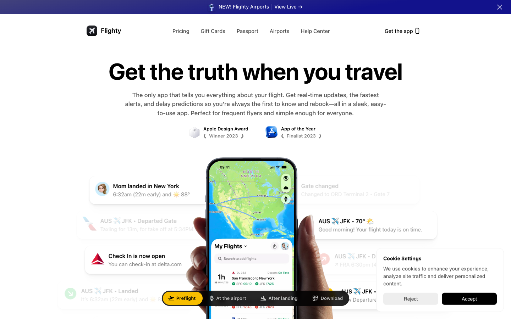
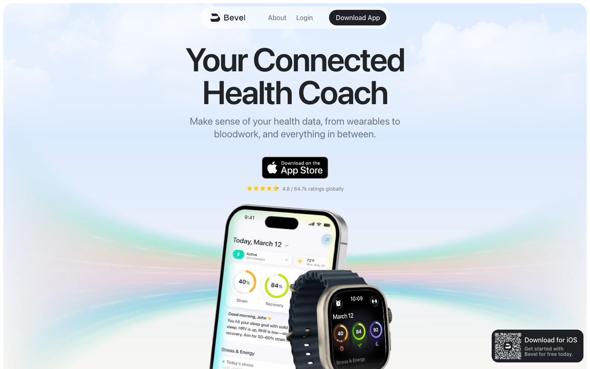
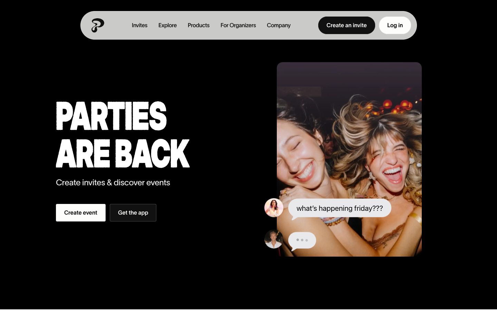
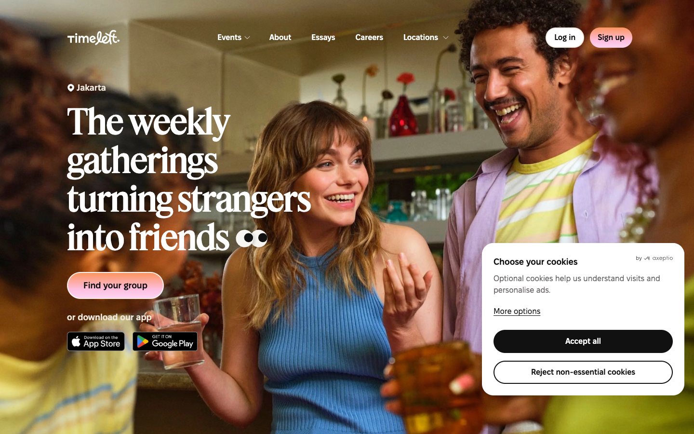
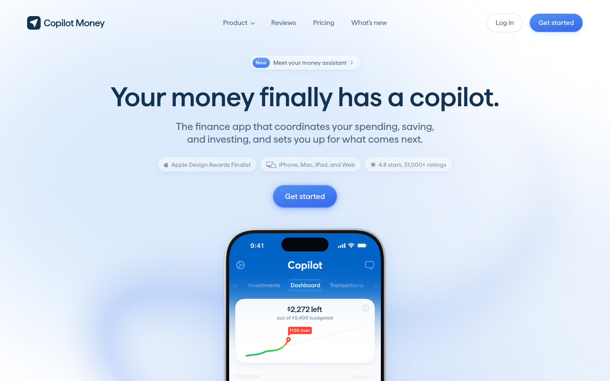
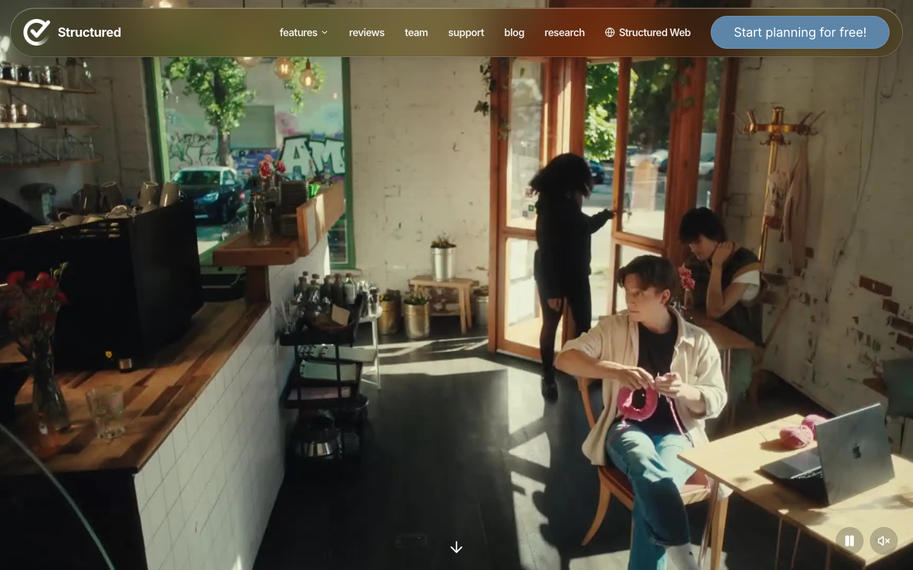
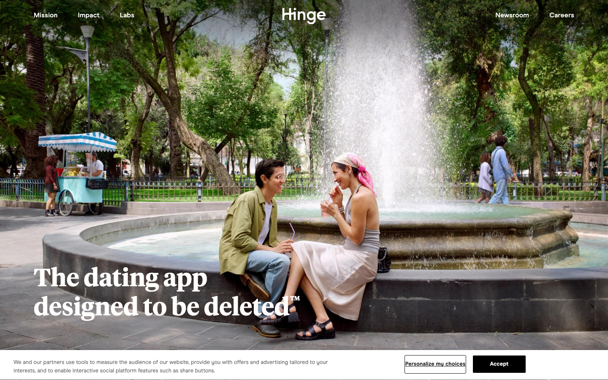
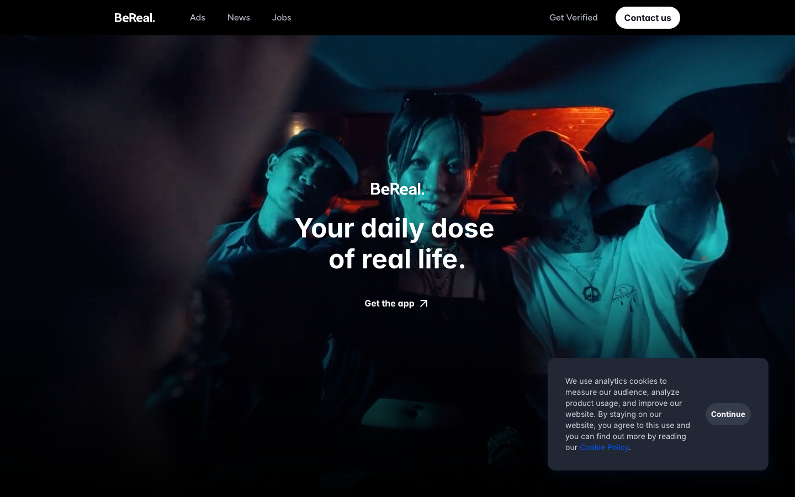
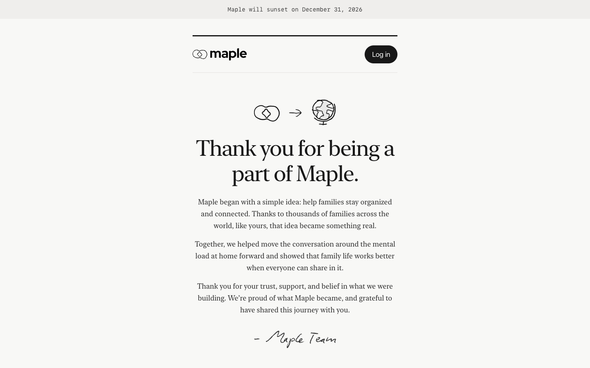

Review scaffolding · not part of the site
Tony’s hero stays the base: the headline, the tilted Daily Brief phone and the knit clover behind it. Each exploration adds one idea from a real app site. Same copy, same page below.
First screens captured on 20 Nov at 1440 × 900. Full set with phone sizes in research/.









The hero Tony said is better than the current site. Unchanged; all three below start from it.
The morning Sprout actually sends, arriving one by one around the phone: a to-do from the teacher’s email (real Gmail logo), a playdate invite, Dana ticking something off, the class chat.
The headline promises two things, the parent community and the Daily Brief. So the class chat phone stands behind the Daily Brief phone, each with one short label.
The parents of one class around the phone, by face and by kid, with the kind of message the class chat is for, plus “Miss Taylor’s class · 18 parents”. People without a stock photo.